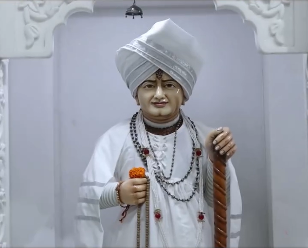

આસ્થાનો મહાપર્વ — શ્રદ્ધાનો મહાકુંભ અનેક વર્ષો થી આયોજીત આ અલૌકિક અને ભવ્ય પદયાત્રા, ૪ દિવસની કઠોર તપસ્યા સમાન છે. આ માત્ર શ્રદ્ધાળુઓનો અવિરત પ્રવાહ નહીં, પણ ભક્તિનો હિલોળા લેતો મહાસાગર છે આ જલારામ બાપા ના સાક્ષાત આશીર્વાદનો મહાયજ્ઞ છે!
સુદામાપુરી થી વિરપુરધામ, માત્ર યાત્રા નહી, જલારામબાપા ના આશીર્વાદનો મહાયજ્ઞ!!
લક્ષ્ય એક — વિરપુરધામ, શક્તિ એક — જલારામબાપા નુ નામ, અનેક ભક્તો, એક જ પરિણામ, જલારામબાપા ના આશીર્વાદ!!
જ્યા શક્તિ અને જીવંત પ્રેમ મળે છે, ત્યાં અખંડ ભક્તિની આ પદયાત્રા વર્ષનો સુવર્ણ ઇતિહાસ સર્જે છે!!